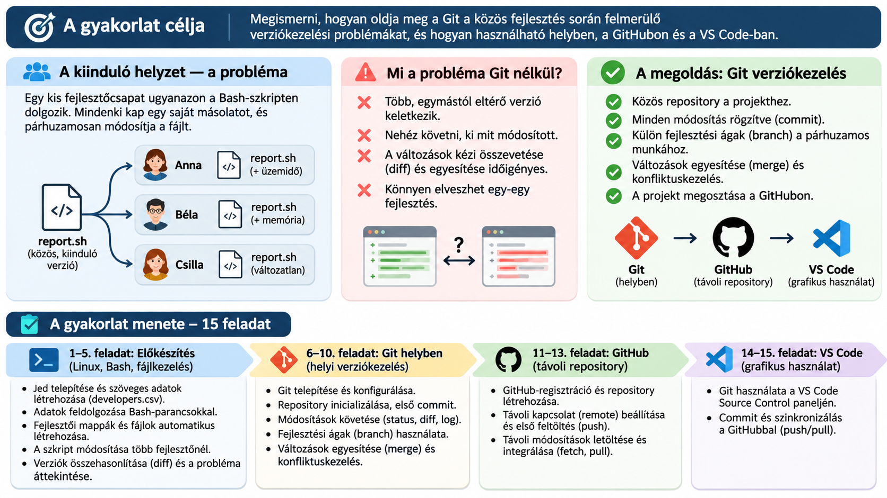

7. hét – Git, GitHub és csapatmunka Linuxon
15 feladat · Debian VM / PowerShell vagy VS Code SSH / GitHub
A gyakorlat a korábbi héten létrehozott Debian VM-en zajlik, PowerShellből vagy VS Code Remote – SSH kapcsolattal. Beadási határidő: 2026. november 12., csütörtök, 11:40 (magyar idő). A feladatokat önállóan oldd meg. Kétféle segítség áll rendelkezésre: (1) parancstipp, amely csak a parancs nevét és fontosabb kapcsolóit adja meg; (2) AI-segítség, amelyhez kérdésmintát kapsz. Az AI válaszait ellenőrizd, és a beadásban jelezd a használatát. Jelszót, hozzáférési tokent és privát kulcsot ne illessz be a válaszmezőkbe.
Neptun-kód (kötelező, 6 karakter):
A probléma: három fejlesztő, három különböző fájl

Projektforgatókönyv. Anna, Béla és Csilla ugyanannak a report.sh Bash-szkriptnek a másolatával indul. Anna az üzemidőt, Béla a memóriaadatokat bővíti, majd mindketten ugyanazt a fejlécsort is átírják. Melyik változat a legfrissebb? Hogyan őrizhető meg mindkét fejlesztés? Először a diff segítségével vizsgálod meg a problémát, utána Gittel oldod meg.
team-project/
├── developers.csv
├── setup.sh
├── project/
│ └── report.sh # közös kiinduló változat
└── developers/
├── anna/report.sh
├── bela/report.sh
└── csilla/report.shA 6–15. feladatban csak a project/ könyvtárat tesszük Git-repositoryvá. A fejlesztői másolatok a manuális verziókezelés szemléltetésére maradnak meg.
I. A Git nélküli fejlesztés problémája (1–5. feladat)
- Parancstipp: a szükséges parancsok neve és néhány kapcsolója, de nem a teljes megoldás.
- AI-segítség: egy kérdésminta, amelyet tetszőleges AI-asszisztensben használhatsz. Először magad próbálkozz; az AI-tól lehetőleg magyarázatot vagy hibakeresési segítséget, ne kész beadandót kérj.
Az AI-használatot a válaszmezőben röviden dokumentáld. Jelszót, tokent, személyes adatot ne adj meg AI-eszköznek.
1. feladat – SSH-kapcsolat és Jed telepítése
Környezet: PowerShell vagy VS Code terminál → Debian VM · AI: segítségként használható.
Csatlakozz a Debian VM-hez, ellenőrizd a felhasználót és a munkakönyvtárat, telepítsd a Jed szövegszerkesztőt, és hozd létre a ~/team-project/project könyvtárat. Ellenőrizd, hogy a Jed elindítható.
- segítség – parancstipp
ssh felhasznalo@IP, whoami, pwd, sudo apt update, sudo apt install, mkdir -p, command -v.
- segítség – AI-kérdésminta
„Debian VM-hez csatlakozom SSH-val. Magyarázd el, hogyan ellenőrizhetem a kapcsolatot, és hogyan telepíthetek egy terminálos szövegszerkesztőt. Ne írj kész megoldássort; lépésenként segíts ellenőrizni a saját parancsaimat.”
Elfogadási feltétel: A Jed elérhető, és a projektkönyvtár létrejött.
2. feladat – Fejlesztői adatok és szövegfeldolgozás
Környezet: Debian, Jed és shell · AI: segítségként használható.
Hozd létre Jedben a developers.csv fájlt az alábbi pontosvesszővel tagolt bemeneti adatokkal (ez a feladat adatforrása, nem a megoldása):
id;name;username;role;hours
1;Anna Kovacs;anna;backend;32
2;Bela Nagy;bela;frontend;24
3;Csilla Toth;csilla;tester;20Írasd ki csak a felhasználóneveket fejléc nélkül, számold meg a fejlesztőket, és számítsd ki a heti munkaórák összegét. A parancsokat és az eredményeket dokumentáld.
- segítség – parancstipp
jed, tail -n +2 (fejléc kihagyása), cut -d';' -f... (oszlop kiválasztása), wc -l, awk -F';' (mezők feldolgozása, összegzés).
- segítség – AI-kérdésminta
„Pontosvesszővel tagolt szövegfájlból szeretnék oszlopokat kinyerni Linuxon. Mutasd meg a cut, tail és awk működésének elvét egy másik példán; a saját feladatom parancsát én állítom össze.”
Elfogadási feltétel: A felhasználónevek, a fejlesztők száma és az összes munkaóra helyes.
3. feladat – Közös program és fejlesztői munkapéldányok
Környezet: Debian, Bash · AI: segítségként használható.
Hozd létre a project/report.sh szkriptet. A program jelenítse meg a PROJECT STATUS REPORT címet, a gépnevet, az aktuális felhasználót és a dátumot. Ezután írj setup.sh szkriptet, amely a developers.csv sorait feldolgozva minden fejlesztőnek saját mappát készít a developers/ könyvtár alatt, és oda másolja a közös report.sh fájlt. Ellenőrizd a Bash-szintaxist és a másolatok azonosságát.
- segítség – parancstipp
hostname, whoami, date '+%Y-%m-%d', while IFS=';' read -r ..., mkdir -p, cp, bash -n, find, cmp. A fejlécet ne dolgozd fel adatként (tail -n +2 vagy első sor kihagyása).
- segítség – AI-kérdésminta
„Bash-szkriptben egy pontosvesszővel tagolt fájl minden adatsorához külön könyvtárat szeretnék létrehozni. Magyarázd el a while read, az IFS és az idézőjelek szerepét; segíts a saját ciklusom hibakeresésében, de ne készítsd el helyettem a teljes szkriptet.”
Figyelem: ha a setup.sh feltétel nélkül másol, újrafuttatáskor felülírhatja a fejlesztői példányokat. A 4–5. feladatban ne futtasd újra.
Elfogadási feltétel: Három különálló, kezdetben azonos tartalmú másolat készült.
4. feladat – Párhuzamos módosítások Git nélkül
Környezet: Debian, Jed · AI: segítségként használható.
Anna saját developers/anna/report.sh fájlját egészítse ki üzemidővel, Béla a saját developers/bela/report.sh fájlját memóriaadatokkal. Csilla ne módosítson. Ezután Anna és Béla ugyanazt a fejlécsort is írja át eltérő szövegre: ANNA STATUS REPORT, illetve BELA STATUS REPORT. Futtasd a változatokat, és ellenőrizd, hogy a közös fájl változatlan maradt.
- segítség – parancstipp
jed, uptime -p, free -h, bash, cat, cmp.
- segítség – AI-kérdésminta
„Egy Bash-program két másolatát különböző funkciókkal bővítem. Hogyan ellenőrizhetem, hogy mindkét változat futtatható, és az eredeti változat nem módosult? Csak ellenőrzési ötleteket adj.”
Elfogadási feltétel: Anna és Béla változata eltér a közös programtól, Csilláé azonos.
5. feladat – Különbségek és manuális integrációs probléma
Környezet: Debian, diff · AI: segítségként használható.
Hasonlítsd össze a közös változatot Anna, Béla és Csilla változatával, majd Anna és Béla fájlját egymással. Dokumentáld, mely sorok módosultak, mely fejlesztések egyesíthetők könnyen, és melyik sor okozhat ütközést. Ne írd felül a közös fájlt: a megoldást később Gittel készíted el.
- segítség – parancstipp
diff -u EREDETI MODOSITOTT (egységes diff), cmp (azonosság vizsgálata), echo $? (utolsó parancs kilépési kódja). A diff 1-es kilépési kódja eltérést jelent, nem feltétlenül hibát.
- segítség – AI-kérdésminta
„Magyarázd el a diff -u kimenetében a +, - és @@ jelöléseket. Hogyan ismerhető fel, ha két fejlesztő ugyanazt a sort másképp módosította? A konkrét összehasonlítást én végzem el.”
Elfogadási feltétel: Mind a négy összehasonlítás és az ütköző fejléc magyarázata szerepel.
II. Helyi Git-verziókövetés (6–10. feladat)
A feladatok célállapotot adnak meg, nem másolható parancssorozatot. Először önállóan dolgozz. Elakadás esetén nyisd meg az 1. segítség – parancstipp részt; a 2. segítség – AI-kérdésminta magyarázatot vagy hibakeresést kér, nem kész megoldást. A beadásban röviden jelezd, ha AI-t használtál.
6. feladat – Git telepítése és konfigurálása
Környezet: Debian VM · Cél: a Git elérhető, a commitok szerzői adatai be vannak állítva.
Ellenőrizd a Git telepítését, szükség esetén telepítsd. Állítsd be globálisan a commitokhoz használt nevet és e-mail-címet, majd ellenőrizd a beállításokat. Az e-mail lehet a GitHub no-reply címed. Jelszót vagy tokent ne írj a konfigurációba.
- segítség – parancstipp
git --version · apt install · git config --global · git config --list --show-origin. A user.name és user.email konfigurációs kulcsokra lesz szükség.
- segítség – AI-kérdésminta
„Debianon szeretném ellenőrizni a Git telepítését és a commitok szerzői beállításait. Magyarázd el a globális konfiguráció szerepét, és segíts értelmezni a saját parancsom kimenetét. Ne állíts össze kész parancssorozatot.”
Elfogadási feltétel: Git-verzió és ellenőrzött szerzői beállítások dokumentálva.
7. feladat – Helyi repository és első commit
Környezet: Debian VM · Cél: a közös report.sh első verziója Git-commitként megmarad.
A ~/team-project/project könyvtárban hozz létre helyi repositoryt main kezdőággal. Ellenőrizd, mely fájlok nincsenek még verziókövetés alatt, majd rögzítsd a közös report.sh kiinduló változatát. A developers/ könyvtár maradjon a repositoryn kívül.
- segítség – parancstipp
cd · git init -b · git status · git add · git commit -m · git log --oneline. Figyelj arra, melyik könyvtárban futtatod az inicializálást.
- segítség – AI-kérdésminta
„Egy meglévő Bash-projektet szeretnék helyi Git-repositoryvá alakítani. Mi a különbség a repository inicializálása, a staging és az első commit között? Segíts ellenőrizni a lépéseimet, de ne add meg a kész megoldást.”
Elfogadási feltétel: A main ágon létrejött az első commit.
8. feladat – Módosítások és commitok követése
Környezet: Debian VM · Cél: Anna üzemidőre vonatkozó fejlesztésének rögzítése.
A közös report.sh fájlt bővítsd üzemidő-információval. A módosítás rögzítése előtt és után vizsgáld meg a munkakönyvtár és a staging area állapotát. Készíts új commitot, majd ellenőrizd a történetet.
- segítség – parancstipp
git status · git diff · git add · git diff --staged · git commit -m · git log --oneline. A sima diff és a --staged kapcsoló nem ugyanazt mutatja.
- segítség – AI-kérdésminta
„Magyarázd el a working directory, staging area és repository közötti különbséget egy egyszerű példával. A saját git status és git diff kimenetemet szeretném értelmezni; ne írd meg helyettem a feladat parancsait.”
Elfogadási feltétel: Új commit készült, a staging szerepét a hallgató saját szavaival megmagyarázza.
9. feladat – Fejlesztési ág létrehozása
Környezet: Debian VM · Cél: Béla memóriahasználatra vonatkozó módosítása külön ágon maradjon.
A jelenlegi main állapotából hozz létre feature/memory nevű fejlesztési ágat. Bővítsd a programot memóriaadatokkal, rögzítsd a változást, majd térj vissza a main ágra. Vizsgáld meg, miben tér el a két ág, és miért nem látszik a fejlesztés a main változatában.
- segítség – parancstipp
git switch -c · git branch -v · git status · git add · git commit · git switch · git log --all --oneline --graph. A memóriaadatokhoz a Linux free parancsa segíthet.
- segítség – AI-kérdésminta
„Egy Git-projektben külön fejlesztési ágat készítettem. Magyarázd el, hogyan kapcsolódnak a branchek a commitokhoz, és miért más a fájl tartalma két ág között. Ne add meg a konkrét feladat megoldását.”
Elfogadási feltétel: A feature/memory külön commitot tartalmaz, a main még nem.
10. feladat – Merge és valódi konfliktus
Környezet: Debian VM · Cél: kétféle egyesítési helyzet megfigyelése.
A. Egyszerű egyesítés. A main ágon egyesítsd a feature/memory fejlesztést. Ellenőrizd, hogy az üzemidő és a memóriaadatok is szerepelnek a programban, majd vizsgáld meg a commitok történetét.
B. Konfliktus. A main állapotából hozz létre feature/title ágat, és azon módosítsd a PROJECT STATUS REPORT fejlécsort ANNA STATUS REPORT szövegre. Rögzítsd. Ezután a main ágon ugyanazt a sort módosítsd BELA STATUS REPORT szövegre, és azt is rögzítsd. Próbáld egyesíteni a két ágat. Vizsgáld meg a konfliktusjelölőket, dönts a végleges fejléc szövegéről, és fejezd be az egyesítést. Ellenőrizd a Bash-szintaxist.
- segítség – parancstipp
git switch · git switch -c · git merge · git status · git diff · git add · git commit · git log --graph --all · bash -n. Konfliktus esetén a <<<<<<<, =======, >>>>>>> jelölések segítenek a két változat felismerésében.
- segítség – AI-kérdésminta
„Egy Git merge során konfliktusjelölőket látok egy Bash-fájlban. Magyarázd el a jelölők jelentését és a konfliktusfeloldás ellenőrzésének lépéseit, de ne válaszd ki helyettem a végleges tartalmat.”
Elfogadási feltétel: A két fejlesztés egyesült, a konfliktus feloldása dokumentált, a szkript szintaktikailag helyes.
III. GitHub és távoli repository (11–13. feladat)
11. feladat – GitHub-fiók és üres repository
Környezet: GitHub web, Debian · AI: segítségként használható, a felhasznált javaslatokat jelöld.
Jelentkezz be a GitHubra (szükség esetén regisztrálj). Hozz létre üres privát repositoryt linux-monitor-<azonosito> néven, README és .gitignore automatikus létrehozása nélkül. Ellenőrizd a gh CLI telepítését; ha hiányzik, használd a GitHub hivatalos Debian telepítési útmutatóját. Hitelesítés:
gh --version
gh auth login
gh auth statusA CLI-ben GitHub.com → HTTPS → Authenticate Git with your GitHub credentials: Yes → Login with a web browser beállításokat válaszd. A böngészős kódot a saját gépeden add meg. Tokeneket ne másolj a beadásba.
Elfogadási feltétel: Létezik az üres GitHub-repository, a CLI hitelesített.
12. feladat – Remote és első push
Környezet: Debian, GitHub · AI: segítségként használható, a felhasznált javaslatokat jelöld.
A helyi project repositoryban add hozzá a távoli URL-t (a saját URL-edet használd), és töltsd fel a main ágat:
cd ~/team-project/project
git remote add origin https://github.com/FELHASZNALO/REPOSITORY.git
git remote -v
git push -u origin mainHa már van origin, ellenőrizd az URL-t; ne adj hozzá másodszor azonos nevű remote-ot. A GitHub webes felületén ellenőrizd a commitokat.
Elfogadási feltétel: A main ág és a report.sh megjelent a GitHubon.
13. feladat – Fetch és pull különbsége
Környezet: GitHub web és Debian · AI: segítségként használható, a felhasznált javaslatokat jelöld.
A GitHub webes felületén módosítsd a report.sh egyik nem konfliktusos megjegyzését, és commitold. Ezután:
git fetch origin
git log --oneline main..origin/main
git diff main origin/main
git pull --ff-onlyEllenőrizd, hogy a fetch után a munkafájl változatlan, a pull után pedig frissült. A feladatot tiszta munkakönyvtárból indítsd.
Elfogadási feltétel: A fetch és pull különbségét konkrét eredménnyel magyarázza.
IV. VS Code grafikus Git-kezelés (14–15. feladat)
A Git-műveleteket a VS Code grafikus Source Control felületén hajtsd végre. A válaszmezőkbe ne parancssorokat írj, hanem a létrejött commitok adatait és a műveletek értelmezését. A Remote – SSH kapcsolat a Debian VM ~/team-project/project könyvtárára mutasson.
14. feladat – VS Code Source Control: módosítás és commit
Környezet: Windows VS Code + Remote – SSH · Cél: commit készítése kizárólag grafikus Git-műveletekkel.
Nyisd meg a Debian VM projektmappáját a VS Code-ban. A szerkesztőben bővítsd a README.md fájlt a projekt rövid leírásával (ha még nem létezik, hozd létre). A Source Control panelen tekintsd meg a módosításokat, végezd el a Stage Changes, majd a Commit műveletet. Keresd meg a commit rövid azonosítóját a VS Code előzmény-/gráfnézetében. A feltöltés még nem része ennek a feladatnak.
- segítség – felülettipp
Explorer → fájlszerkesztés; Source Control → Changes / Staged Changes; Stage Changes (+); commitüzenet; Commit; Git-előzmények vagy Graph nézet. A bővítmény neve: Remote – SSH.
- segítség – AI-kérdésminta
„A VS Code Remote – SSH és Source Control felületét használom. Magyarázd el, hol láthatók a módosítások, a staging és a commitok. Ne javasolj terminálos Git-parancsokat, és ne végezd el helyettem a feladatot.”
Elfogadási feltétel: A README módosult, commit készült a VS Code-ban, és a hallgató meg tudja nevezni a két grafikus műveletet.
15. feladat – VS Code: Push, Pull és GitHub-ellenőrzés
Környezet: VS Code Source Control + GitHub webes felület + Azure Portal · Cél: a helyi és a távoli repository szinkronizálása grafikus eszközökkel.
A VS Code grafikus felületén Push (vagy Sync Changes) művelettel töltsd fel a 14. feladat commitját. Ellenőrizd a GitHubon. Ezután a GitHub webes szerkesztőjében módosítsd a README.md fájlt, és hozz létre új commitot. Térj vissza a VS Code-ba, és Pull (vagy megfelelő szinkronizálási) művelettel töltsd le a módosítást. Ellenőrizd, hogy a helyi és távoli main ugyanarra a legutolsó commitra mutat. Végül az Azure Portalon állítsd le a VM-et, és ellenőrizd a Stopped (deallocated) állapotot.
- segítség – felülettipp
Source Control → … menü → Push, Pull, Sync Changes; GitHub → repository → README.md → szerkesztés → commit; VS Code → commitelőzmények / Graph. A Push feltölt, a Pull letölt és integrál.
- segítség – AI-kérdésminta
„A VS Code Source Control felületén szeretném a GitHubbal szinkronizálni a projektet. Magyarázd el a Push, Pull és Sync Changes közötti különbséget, és segíts ellenőrizni a szinkronizáltságot. Ne használj terminálos Git-parancsokat.”
Elfogadási feltétel: A GitHubon láthatók a változások, a két main ág azonos commitra mutat, a VM deallokált állapotú.
A rövid commitazonosító és a repository URL formátumellenőrzése nem bizonyítja, hogy a commit ténylegesen létezik. A GitHubon végzett ellenőrzés külön szükséges.
Mentés és beadás
A válaszok automatikusan mentődnek ebben a böngészőben. A beadás előtt ellenőrizd a Neptun-kódot és a kitöltött mezőket. A szintaktikai ellenőrzés nem helyettesíti a parancsok tényleges futtatását.
Beadási határidő: 2026. november 12. 11:40 (magyar idő).
Beadás előtti összesítés
Az időmérés és az eseménykövetés a projekt config/setup.js fájljából konfigurálható. Az SSH-terminálban végzett munka nem feltétlenül számít böngészőbeli aktív időnek.
Időmérés: – · Eseménykövetés: –
Becsült aktív idő: 0:00 · Szerkesztések: 0
Első megnyitás: – · Utolsó aktivitás: –
```